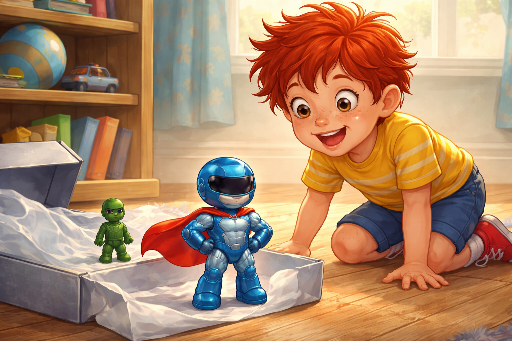
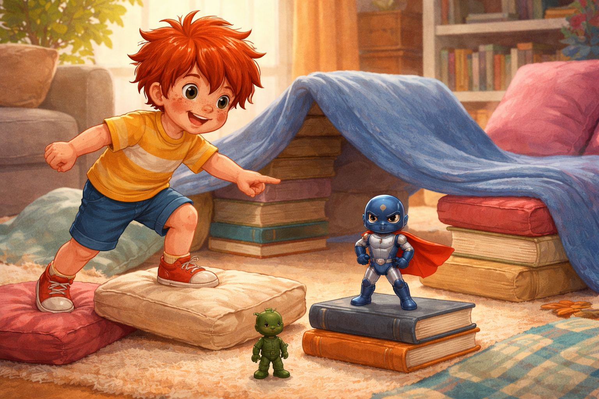
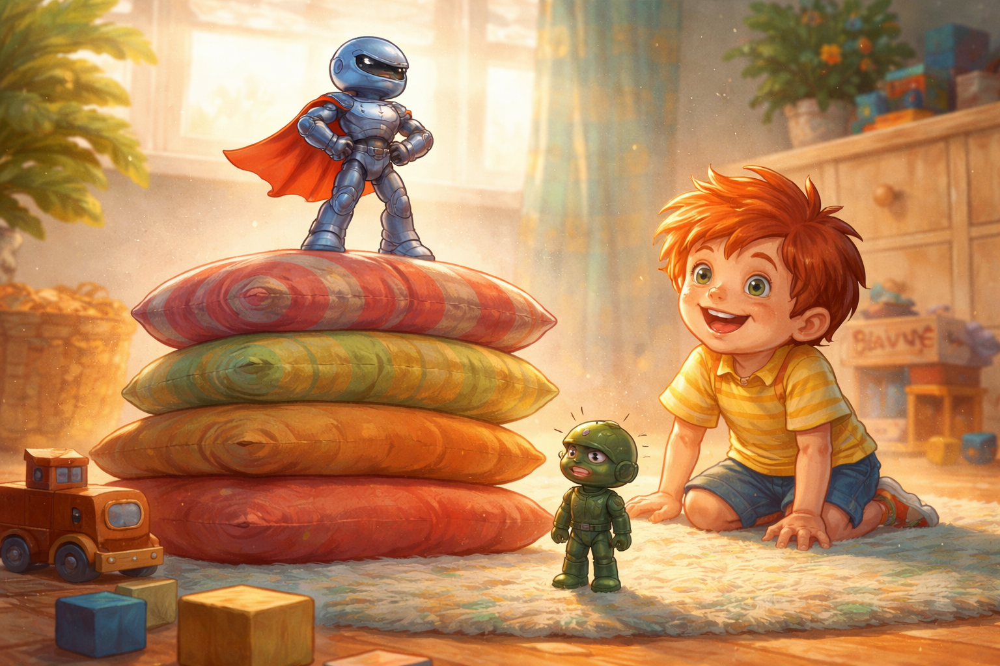
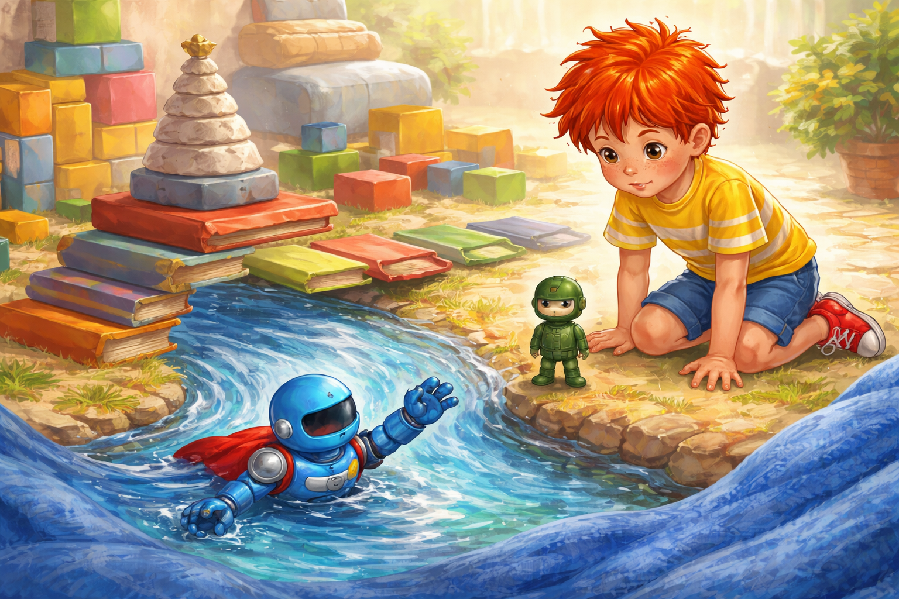
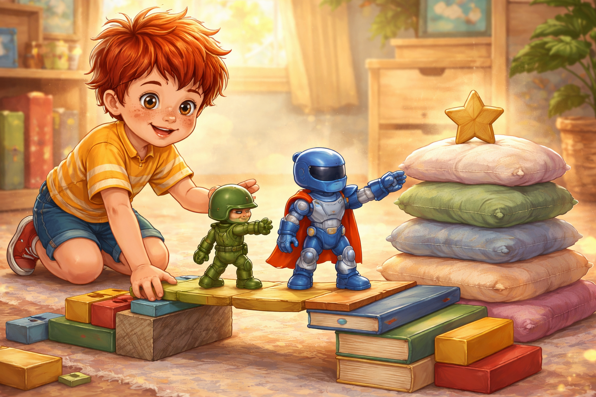
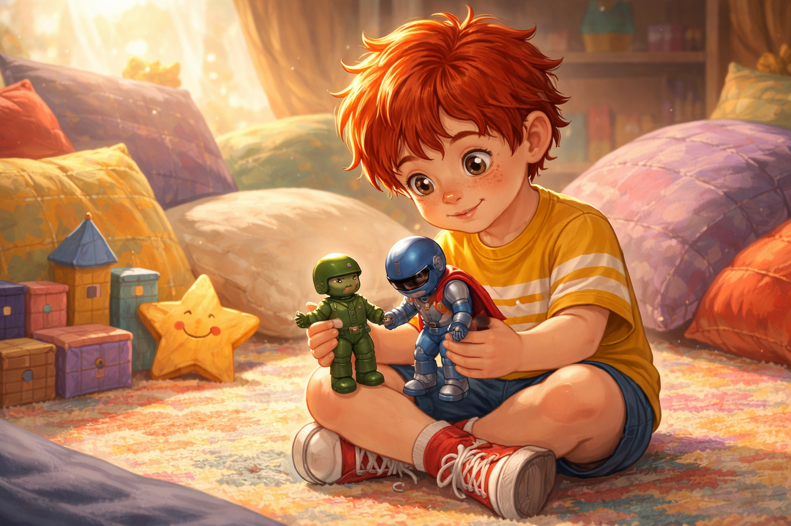
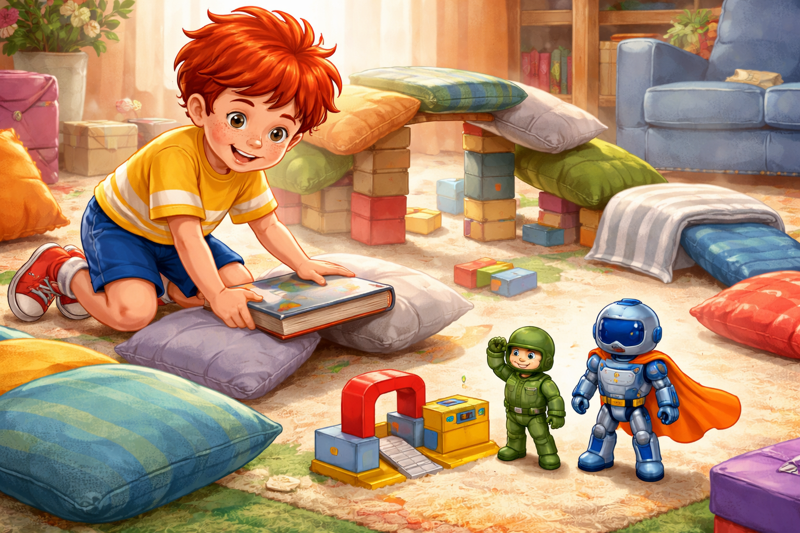

Палавко има нова играчка
В събота сутрин къщата още се протягаше сънено. Завесите пропускаха тънки ивици слънце, по килима лежаха вчерашни кубчета, а възглавниците на дивана бяха подредени така, сякаш през нощта са водили тайна битка и никоя не е победила.
Палавко беше по пижама, с рошава червена коса и с едно чорапче, което упорито се беше завъртяло на петата му. Той тъкмо обясняваше на Рико, че под масата може да се построи подводна крепост, когато вратата се отвори и татко влезе с малка сребриста кутия под мишница.
Кутията не беше голяма. Но беше от онези кутии, които веднага карат детските очи да станат кръгли като копчета.
- Това е за теб - каза татко. - Но първо обещай, че няма да скачаш върху дивана от радост.
Палавко кимна толкова бързо, че косата му заподскача сама.
- Обещавам! Само може ли мъничко да подскоча до дивана?
Татко се засмя и му подаде кутията.

Палавко я взе с две ръце, сякаш вътре спеше нещо много важно. Капакът се отвори с тихо шушукане. Под хартията имаше играчка, каквато Палавко не беше виждал досега - малък супергерой с лъскав синьо-сребрист костюм, червено-оранжева пелерина и шлем с тъмен визьор.
Ръцете му се движеха. Краката му се сгъваха. Главата му можеше да се завърта наляво и надясно, а когато Палавко духна леко, пелерината му трепна като истински геройски флаг.
- Уау - прошепна Палавко. - Той може всичко.
Супергероят се изправи в кутията, сложи ръце на кръста и застана така, сякаш цялата стая току-що беше станала негова сцена.
- Аз съм Блицко - каза той. - Най-бързият, най-смелият и най-модерният герой в тази стая.

Рико, малкият зелен пластмасов войник, стоеше на нощното шкафче. Той наклони глава и погледна новодошлия с любопитство.
- Здравей, Блицко - каза Рико. - Аз съм Рико.
Блицко го огледа от зелената каска до малките ботуши. Не беше лош поглед, но беше от онези погледи, които казват: Хм, това ли е всичко?
- Приятно ми е, древна история - рече Блицко. - Ти движиш ли си ръцете?
- Понякога Палавко ми ги мести - отвърна Рико спокойно.
- Разбирам - каза Блицко и изправи още повече пелерината си. - При мен всичко е шарнирно.
Палавко не чу колко остро прозвучаха думите. Той вече беше на пода и правеше първата спасителна мисия. Две възглавници станаха планина, едно одеяло стана пропаст, а дебелата книга с приказки се превърна в мост, по който можеха да минават само най-смелите.
- Спасителен скок! - извика Палавко.
Блицко прелетя над одеялото, кацна върху книгата, завъртя глава и вдигна ръка така, че Палавко ахна.
- Видя ли, Рико? Той може да прави пози!
Рико се усмихна, но усмивката му беше малко по-тиха от обикновено.
- Може. Изглежда много впечатляващ.

След това игрите започнаха една след друга, като влакчета на гара в ден с много пътници. Блицко спаси плюшеното мече от планина от възглавници. Блицко победи робот от кубчета, който според Палавко беше ужасно опасен, но само докато не му падне главата. Блицко прелетя през тунел от книжки и кацна върху кутийка от моливи.
Рико стоеше отстрани.
Понякога Палавко го преместваше съвсем внимателно, но все пак го преместваше.
- Само мъничко встрани, Рико. Тук Блицко трябва да кацне.
Рико кимваше. Той беше добър в това да стои стабилно, но не беше приятно все да стоиш на място, когато играта минава покрай теб като парад.
Блицко, разбира се, забеляза колко много му се възхищава Палавко. И колкото повече Палавко го поставяше на най-високите възглавници, толкова по-високо започваше да звучи гласът му.
- За такива сложни мисии трябват модерни герои - каза той, докато стоеше на кула от възглавници. - Старите играчки са добри за пазене на прах.
Този път Палавко го чу.

Той погледна към Рико. Рико беше навел глава и се преструваше, че разглежда едно копче на възглавницата, сякаш копчето криеше карта на тайно съкровище.
- Блицко... - започна Палавко, но новият герой вече сочеше към следващата мисия.
- Няма време за бавене! Светът на килима чака!
Следобед Палавко измисли най-голямата спасителна задача за деня. На килима се появи град от кубчета, мост от книги, река от син шал и висока кула от възглавници. На върха на кулата стоеше малка дървена звезда.
- Блицко трябва да спаси звездата! - обяви Палавко.
Блицко застана на ръба на моста. Пелерината му се развя, шлемът му блесна, а гласът му стана важен като фанфара.
- Лесно. Аз съм създаден за велики дела.
Той скочи.
Първо всичко изглеждаше прекрасно. После едната му ръка щракна нагоре. Другата заседна настрани. Краката му се завъртяха по начин, който не изглеждаше никак геройски.
И Блицко падна право в реката от син шал.
- Ох! - каза той. - Ръката ми не мърда.
Палавко го вдигна внимателно. Опита се да завърти ръката, но тя само щракна тихичко и остана накриво. Блицко изведнъж вече не изглеждаше толкова блестящ. Пелерината му беше сгъната, а важният му глас се беше смалил.
- Аз... аз не мога да спася звездата така - прошепна той.

В стаята настъпи тишина. Дори възглавниците сякаш спряха да шумолят.
Тогава Рико слезе от мястото си до кулата. Той не бързаше. Малките му зелени ботуши стъпваха спокойно по килима.
- Може би не трябва да я спасяваш сам - каза той.
Блицко го погледна.
- Ти? Но ти дори не си подвижен.
- Не съм - отвърна Рико. - Но умея да стоя стабилно. Понякога това е точно каквото трябва.
Палавко се усмихна. Онази усмивка, която се появява, когато в главата му щракне добра идея.
- Точно така! Рико може да бъде опора.
Той премести книгите, подреди две кубчета, сниши моста и сложи Рико до основата му. После постави Блицко до него, така че двамата да са рамо до рамо, като истински екип.
- Сега бавно - каза Рико. - Геройството не винаги е скок. Понякога е добра стъпка.
Блицко не отговори веднага. После кимна.
Този път не се хвърли напред. Стъпи внимателно. Рико стоеше до него стабилен като малка зелена кула. Палавко придържаше книгата-мост с две ръце. Блицко протегна здравата си ръка.
И достигна звездата.

- Спасена е! - извика Палавко.
Той грабна Рико и Блицко и ги притисна до себе си. Не силно, защото героите все пак бяха малки, а и едната ръка на Блицко още беше сърдита на света.
- Направихте го заедно!
Блицко погледна към Рико. За първи път не гледаше отгоре. Дори шлемът му сякаш беше станал по-малко важен.
- Извинявай - каза той. - Държах се като лъскава кутия без нищо вътре.
Рико се засмя.
- Важното е, че вътре все пак има герой.
- И приятел - добави Блицко.

Палавко седна на килима и сложи двамата един до друг.
- Знаете ли какво? Блицко ще бъде бързият герой, Рико ще бъде капитанът на плана, а аз ще строя най-опасните възглавничени градове.
- Приемам - каза Блицко.
- Само ако има гараж за малки зелени войници - добави Рико.
- И площадка за супергеройски кацания! - каза Блицко, този път без да звучи надменно.
До вечерта тримата играха на нова игра. Нарекоха я Спасителната служба на килима. В нея Блицко кацаше върху ниски площадки, Рико измисляше плановете, а Палавко строеше мостове, кули, тунели и една много подозрителна планина от чорапи, която според него може би е вулкан, но може би просто трябва да се прибере.
Играта беше по-бавна от сутрешните скокове. Но беше по-хубава. Защото този път никой не стоеше отстрани.

Когато дойде време за сън, Палавко сложи Рико и Блицко един до друг на нощното шкафче. Стаята притихна. Само лампата хвърляше мек кръг светлина върху двете играчки.
- Утре пак ще играем - прошепна Палавко. - Но заедно.
Блицко кимна.
- Заедно е по-трудно от сам - каза той. - Но май е много по-хубаво.
Рико се усмихна в тъмното.
- Това вече е истинска суперсила.
И така Палавко разбра, че новите играчки могат да бъдат вълнуващи, блестящи и пълни с изненади. Но старото приятелство не се заменя. То просто прави място до себе си.
А когато до него застане и нов приятел, играта става още по-голяма.